基礎題
某電影中，描述一隻紅毛猩猩乘著一捆香蕉在海上漂浮。小新做實驗來確認香蕉是否會漂浮在海面上，結果發現香蕉可以漂浮在純水上，因此推論香蕉也可以漂浮在海水上，且香蕉露出海水面的體積比在純水時多。已知小新的推論過程正確，則小新作出此推論的理由最可能為下列何者？
- (A) 海水的密度大於純水
- (B) 海水的密度小於純水
- (C) 海水的比熱大於純水
- (D) 海水的比熱小於純水
看答案與詳解
答案：(A)
(A) ✔ 若 D海水＞D純水，則 D香蕉＜D海水，香蕉一定也浮；浮體的浮力＝重量，V沒＝W／D液，液體密度愈大，沒入的體積愈小、露出的體積愈多。
(B) ✘ 若海水密度較小，香蕉不一定浮得起來，即使浮起，露出的體積也會比在純水時少。
(C)(D) ✘ 比熱與物體的沉浮無關。
甲、乙兩個裝有純水的玻璃杯置於水平桌面，如圖所示。只要取得下列哪一種資料，即可比較液面下 P、Q 兩點所受的液體壓力大小？
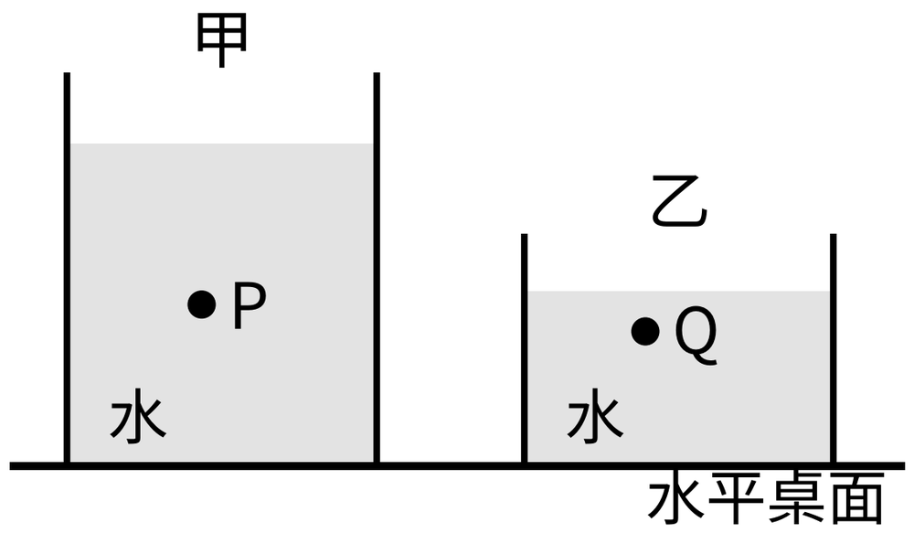
- (A) 兩杯水各自的質量
- (B) 兩杯水各自的體積
- (C) P、Q 兩點到各自液面的垂直距離
- (D) P、Q 兩點到各自杯底的垂直距離
看答案與詳解
答案：(C)
兩杯都是純水（d 相同），只要知道 P、Q 到各自液面的垂直距離即可比較。
(A)(B) ✘ 液體壓力與液體的總質量、總體積無關。
(C) ✔ 深度愈深，液體壓力愈大。
(D) ✘ 到杯底的距離不是深度；兩杯水深不同，無法由此比較。
有一個裝水的玻璃魚缸，內部的水保持靜止，魚缸內有一點 X，其位置如圖所示。若 X 點所受來自上、下、左、右四個方向的液體壓力分別為 P上、P下、P左、P右，則其關係應為下列何者？
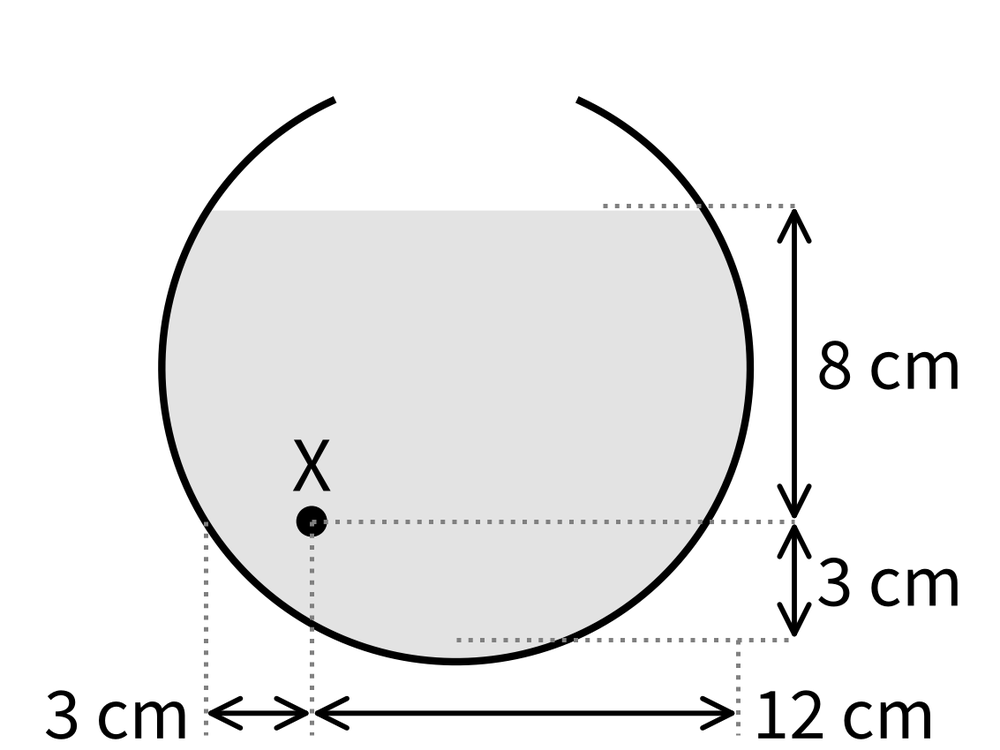
- (A) P上＝P下＝P左＝P右
- (B) P右＞P上＞P下＝P左
- (C) P上＞P下＝P左＝P右
- (D) P上＜P下＝P左＝P右
看答案與詳解
答案：(A)
(A) ✔ 四個方向的壓力相等。
(B)(C)(D) ✘ 圖中 3 cm、12 cm 等水平距離及到缸底的距離，都與 X 點的液體壓力無關。
〔易錯〕不要被到缸壁、缸底的距離干擾。
小真和小文到高山上旅遊，發現密封包裝的洋芋片其外包裝比在山下膨脹許多，如圖所示。以下為兩人對包裝的膨脹現象是否與氣溫有關的對話：
小真：「包裝膨脹應該是因為山上氣溫較低，你看在山下的時候氣溫高就不會。」
小文：「應該不是氣溫的關係吧！……」
已知上述對話中小文不同意小真的論點，則下列說法何者最不適合用來反駁小真？
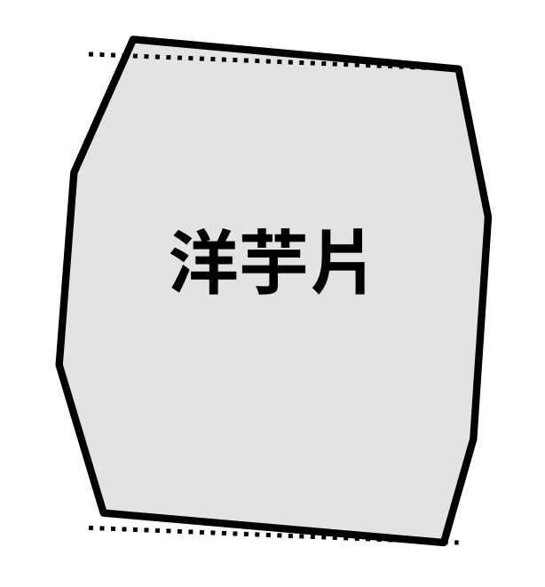
- (A) 我在平地的家中開冷氣時，溫度跟山上相同，洋芋片包裝卻沒有膨脹的現象
- (B) 你看這瓶玻璃瓶裝可樂，同樣到氣溫較低的山上，玻璃瓶卻沒有膨脹的現象
- (C) 山上的便利商店內有暖氣，溫度跟山下相同，可是洋芋片包裝也有膨脹的現象
- (D) 開車上山的過程中，車內空調讓溫度保持不變，可是洋芋片包裝也有膨脹的現象
看答案與詳解
答案：(B)
要反駁「是氣溫低造成的」，必須舉出「溫度相同（或不變）但結果不同」的例子。
(A) 可以反駁：溫度與山上相同（低溫），在平地卻不膨脹 → 低溫不是原因。
(B) 不能反駁（本題答案）：玻璃瓶是硬的，本來就不易膨脹，換了不同的容器，無法說明洋芋片包裝膨脹與氣溫無關。
(C) 可以反駁：溫度與山下相同，在山上卻膨脹 → 與氣溫無關。
(D) 可以反駁：溫度保持不變，高度改變仍膨脹 → 與氣溫無關。
〔易錯〕題目問「最不適合」，要選「不能反駁」的那一個。
在一大氣壓的環境下，靜置於水平桌面的兩裝置如圖所示。圖中 P、R 兩點位於玻璃管內的液面，Q、S 兩點位於玻璃管外容器內的液面，其中哪兩個點的氣壓為一大氣壓？
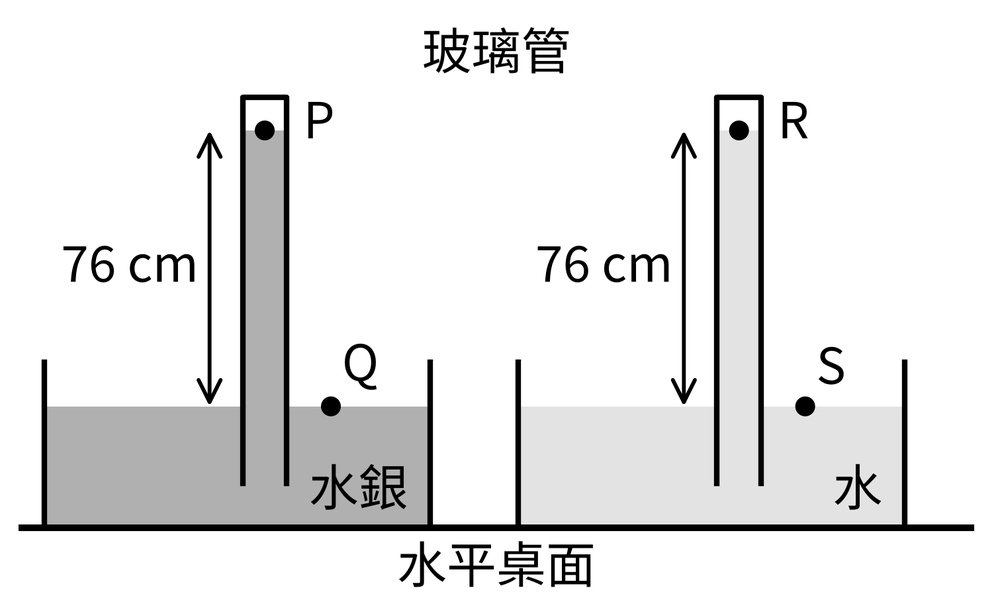
- (A) P、Q
- (B) R、S
- (C) P、R
- (D) Q、S
看答案與詳解
答案：(D)
P：管內水銀柱高 76 cm，正好被一大氣壓撐住，P 上方是真空，氣壓約為 0。
R：管內水柱高 76 cm，R 上方氣體的壓力＝一大氣壓－76 cm 水柱的壓力，小於一大氣壓。
故氣壓為一大氣壓的是 Q、S，選 (D)。
〔易錯〕管內液面上方的氣壓＝外界大氣壓力－管內液柱造成的壓力。
小雅做托里切利實驗時鉛直立起玻璃管於水銀槽中，所得結果如附圖所示，若他將此玻璃管傾斜，使玻璃管頂端距水銀槽液面的鉛直高度為 X cm 時，水銀會充滿玻璃管內，則 X 的最大值為多少？
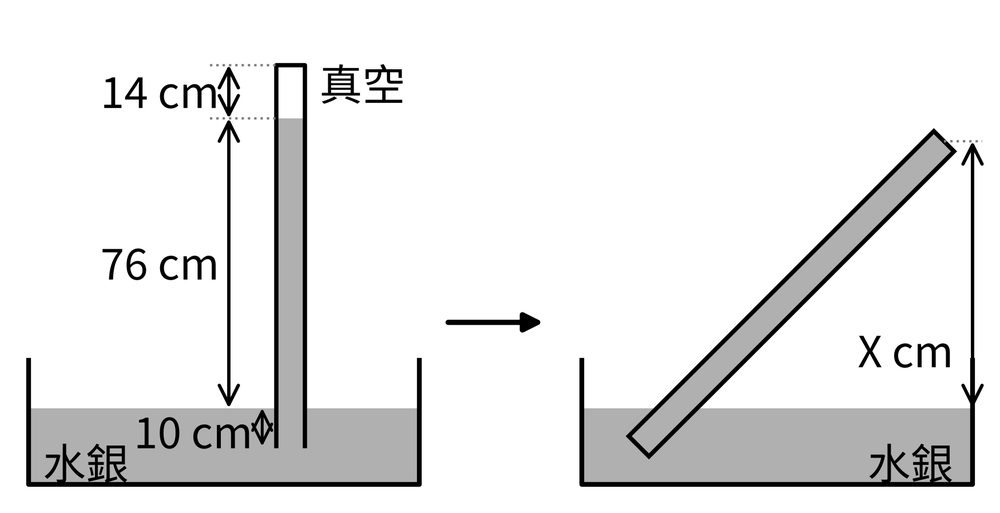
- (A) 14
- (B) 62
- (C) 76
- (D) 86
看答案與詳解
答案：(C)
大氣壓力最多只能撐起鉛直高度 76 cm 的水銀柱，與管子傾斜與否無關。
管子傾斜後，只要管頂到槽液面的鉛直高度 X≦76 cm，管內就會被水銀充滿 → X 最大為 76，選 (C)。
〔易錯〕14 cm 真空與插入槽中的 10 cm 都和 X 無關。
如圖(一)所示，對彈簧秤甲兩端同時施以方向相反、大小同為 100 gw 的水平力，彈簧秤甲仍保持靜止平衡狀態，讀數為 X甲。如圖(二)所示，彈簧秤乙吊掛在支架下，對其施以鉛直向下、大小為 100 gw 的力，彈簧秤乙保持靜止平衡狀態，讀數為 X乙。若彈簧秤的重量很輕可以忽略，且過程中兩彈簧秤均未超過彈性限度，則 X甲、X乙 應為多少？
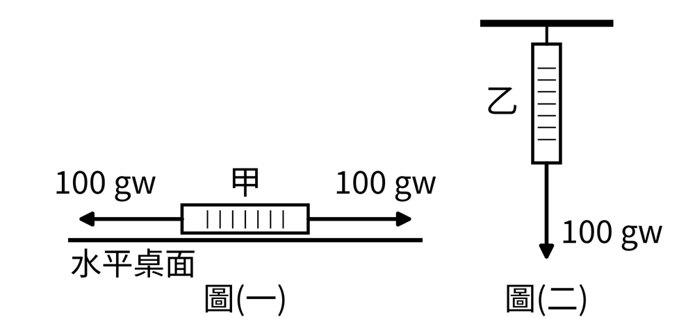
- (A) X甲＝0，X乙＝100 gw
- (B) X甲＝100 gw，X乙＝0
- (C) X甲＝100 gw，X乙＝100 gw
- (D) X甲＝200 gw，X乙＝100 gw
看答案與詳解
答案：(C)
圖(一)：兩端各受 100 gw → 讀數 100 gw。
圖(二)：下端受 100 gw 向下拉，上端由支架提供 100 gw 向上的力 → 讀數也是 100 gw。
兩種情況其實相同，只是圖(二) 的一端換成由支架施力，選 (C)。
〔易錯〕兩端各拉 100 gw 不是 200 gw，也不是互相抵消成 0。
如圖所示，將兩個磁鐵置入玻璃管中，磁鐵甲與玻璃管底部接觸，磁鐵乙靜止漂浮在空中，不與玻璃管、磁鐵甲接觸。關於兩磁鐵的受力情形，下列何者正確？
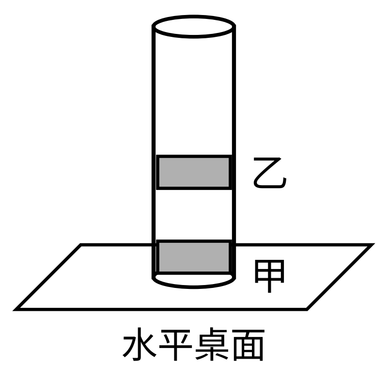
- (A) 兩磁鐵所受合力均為零
- (B) 兩磁鐵所受合力均不為零
- (C) 磁鐵甲所受合力為零，磁鐵乙所受合力不為零，且合力方向向上
- (D) 磁鐵乙所受合力為零，磁鐵甲所受合力不為零，且合力方向向下
看答案與詳解
答案：(A)
磁鐵乙：重力（向下）與甲對乙的磁力（向上，超距力）平衡。
磁鐵甲：重力、乙對甲的磁力（向下）與玻璃管底部的正向力（向上）平衡。
(A) ✔。(B)(C)(D) ✘ 靜止的物體合力必為零。
一彈簧上端固定，下端可吊掛不同質量的砝碼，老師要同學量測並記錄此彈簧全長與砝碼總質量的關係。小明與小華先後以此實驗裝置進行實驗，他們使用完全相同的彈簧，但每次吊掛的砝碼質量不同，紀錄表如圖所示，且實驗完成後彈簧皆可恢復原長。若不考慮實驗誤差及彈簧質量，兩人將實驗結果畫在同一張圖中（小明以實線與●呈現，小華以虛線與▲呈現），則下列四張圖中，哪一張最可能代表兩人的實驗結果？
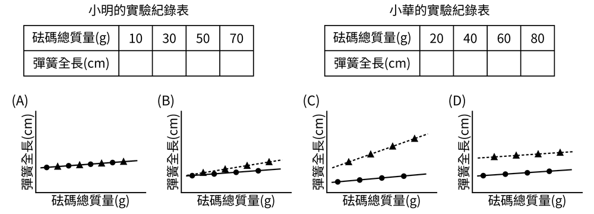
看答案與詳解
答案：(A)
同一條彈簧的「全長—砝碼質量」關係是同一條直線：截距＝原長，斜率由彈簧本身決定。
小明（10、30、50、70 g）與小華（20、40、60、80 g）只是取的質量不同，所有的點都應落在同一條直線上 → (A)。
(B) ✘ 斜率不同表示彈簧不同。(C) ✘ 原長、斜率都不同。(D) ✘ 平行但截距不同，表示原長不同。
進階題
一條彈簧的上端固定於支架上，下端未吊掛物體時，彈簧的長度為 10 cm。在其下方吊掛一個質量未知的物體甲，彈簧的總長度變為 12 cm，接著在物體甲的下方，再加掛一個 60 g 的砝碼，則彈簧的總長度變為 15 cm。若移除物體甲與砝碼後，彈簧恢復原長，則物體甲的質量應為多少？
- (A) 24 g
- (B) 40 g
- (C) 48 g
- (D) 75 g
看答案與詳解
答案：(B)
加掛 60 g 砝碼，伸長量增加 15－12＝3 cm → 每 1 cm 對應 20 g。
物體甲使彈簧伸長 12－10＝2 cm → 甲的質量＝2×20＝40 g，選 (B)。
〔易錯〕用全長 12：15 比例會算錯，要用伸長量。
甲、乙、丙三條完全相同的彈簧懸掛在一根水平橫桿上，甲彈簧無懸掛物品，乙彈簧懸掛重量為 W1 公克重的砝碼，丙彈簧懸掛重量為 W1 公克重及 W2 公克重的砝碼，靜止平衡時，三者的長度關係如圖所示。若三條彈簧質量均很小忽略不計，且乙、丙兩彈簧在取下砝碼後，均可恢復原長，由上述資訊判斷 W1：W2 應為下列何者？
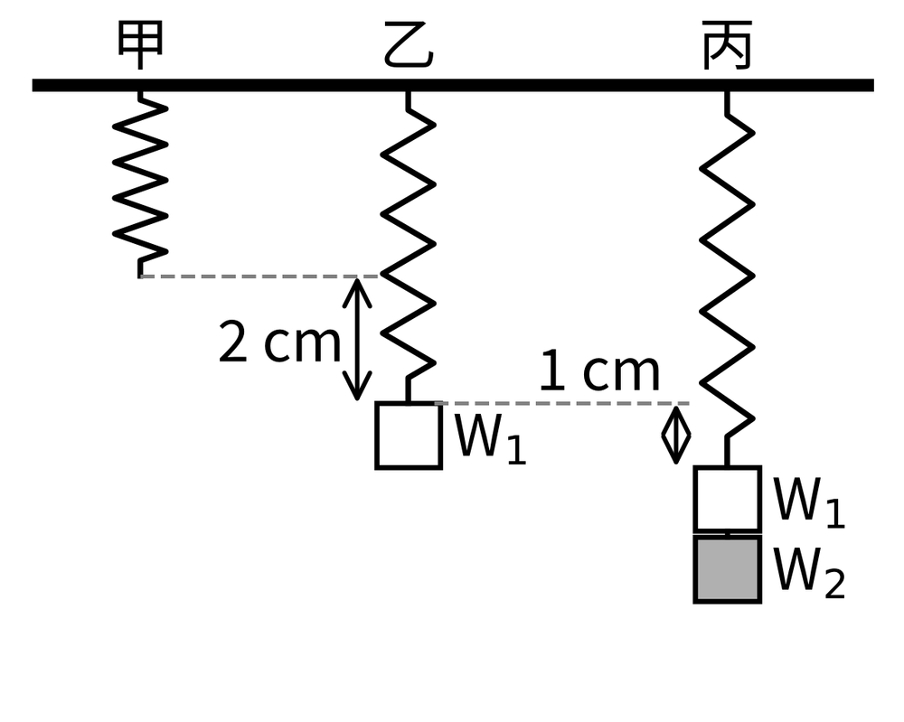
- (A) 1：2
- (B) 2：1
- (C) 2：3
- (D) 3：2
看答案與詳解
答案：(B)
乙比甲長 2 cm → W1 使彈簧伸長 2 cm。
丙比乙再長 1 cm → W1＋W2 使彈簧伸長 3 cm，W2 對應 1 cm。
伸長量與重量成正比 → W1：W2＝2：1，選 (B)。
一塊質量為 1 kg 的木塊分別在甲、乙兩水平桌面上所測量的最大靜摩擦力如附表所示。將此木塊靜置於桌面甲上，施予大小為 1.0 N 的水平力，另將此木塊靜置於桌面乙上，施予大小為 0.5 N 的水平力，則關於此木塊在兩桌面上的運動狀態及所受摩擦力大小，下列敘述何者正確？
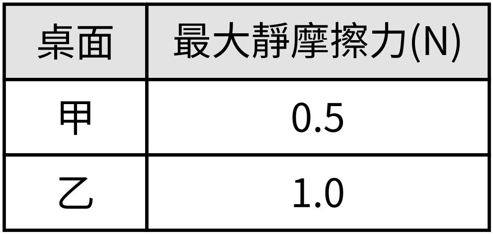
- (A) 在桌面甲上會移動，摩擦力大小為 1.0 N
- (B) 在桌面甲上不移動，摩擦力大小為 1.0 N
- (C) 在桌面乙上會移動，摩擦力大小為 0.5 N
- (D) 在桌面乙上不移動，摩擦力大小為 0.5 N
看答案與詳解
答案：(D)
桌面甲：1.0 N＞0.5 N → 木塊會滑動，摩擦力為動摩擦力，比最大靜摩擦力 0.5 N 還小，不可能是 1.0 N → (A)(B) ✘。
桌面乙：0.5 N＜1.0 N → 木塊不動，靜摩擦力＝水平力＝0.5 N → (C) ✘、(D) ✔。
〔易錯〕靜止時的摩擦力等於外力，不等於最大靜摩擦力。
如圖所示，甲、乙兩正立方體金屬塊，邊長分別為 1 cm、2 cm，靜止堆疊於水平桌面上。甲金屬塊作用於乙金屬塊上表面（灰色部分）的平均壓力大小為 P1，乙金屬塊作用於桌面的平均壓力大小為 P2，已知 P1＝P2，且甲金屬塊的質量為 10 g，則乙金屬塊的質量為多少？
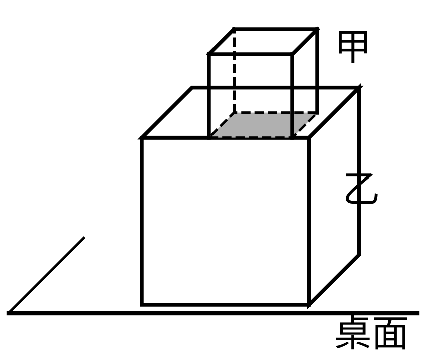
- (A) 20 g
- (B) 30 g
- (C) 40 g
- (D) 80 g
看答案與詳解
答案：(B)
P2：乙壓在桌面上的力＝甲、乙的總重量（10＋m）gw，接觸面積＝2×2＝4 cm2。
P1＝P2 → (10＋m)÷4＝10 → m＝30 g，選 (B)。
〔易錯〕乙對桌面的力要包含上面甲的重量。
一個重量為 200 gw 的空保溫杯，靜置於水平桌面上時，空保溫杯作用於桌面的壓力為 10 gw/cm2，若在杯內裝滿純水後，裝滿水的保溫杯作用於桌面的壓力為 30 gw/cm2，則杯子的容量約為多少？
- (A) 200 mL
- (B) 300 mL
- (C) 400 mL
- (D) 600 mL
看答案與詳解
答案：(C)
裝滿水後總重量＝30 gw/cm2×20 cm2＝600 gw → 水重＝600－200＝400 gw。
水的質量 400 g，密度 1 g/cm3 → 體積 400 cm3＝400 mL，選 (C)。
如圖所示，一裝滿水的塑膠容器靜止浮於水面，圖中 X、Y、Z 三點的液體壓力分別為 PX、PY、PZ，其中 Y、Z 兩點位於同一水平面上，則下列關於 PX 的值及 PY、PZ 的大小關係式何者正確？
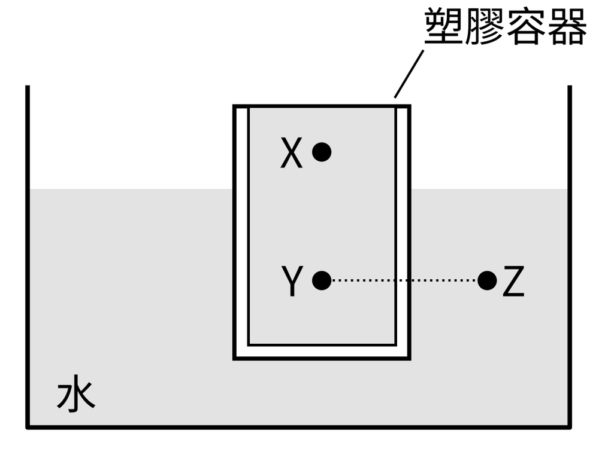
- (A) PX＝0，PY＝PZ
- (B) PX＝0，PY＞PZ
- (C) PX≠0，PY＝PZ
- (D) PX≠0，PY＞PZ
看答案與詳解
答案：(D)
X 在容器內水面之下，深度不為 0 → PX≠0。
容器裝滿水，內部水面在容器口，高於外面的水面；Y、Z 在同一水平面 → Y 到容器內水面的深度大於 Z 到外面水面的深度 → PY＞PZ，選 (D)。
〔易錯〕同一水平面不一定同壓力，必須是相連通的同一液體才成立。
兩個完全相同的量筒中，原本皆裝水 200 mL，今分別置入甲、乙兩個實心物體，待液面靜止平衡後，物體的浮沉情形與量筒的讀數如圖所示。若兩物體皆不與水發生化學反應且不吸水，已知水的密度為 1 g/cm3，則可推論出下列哪些資訊？
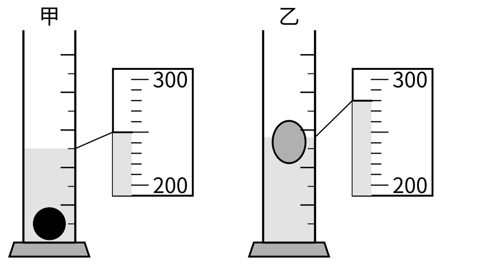
- (A) 甲的質量為 50 g，乙的質量為 80 g
- (B) 甲的質量為 50 g，乙的體積為 80 cm3
- (C) 甲的體積為 50 cm3，乙的體積為 80 cm3
- (D) 甲的體積為 50 cm3，乙的質量為 80 g
看答案與詳解
答案：(D)
甲沉入水底，完全沒入 → 甲的體積＝250－200＝50 cm3；甲的質量無法得知（只知道大於 50 g）。
乙浮在水面，只有一部分沒入 → 排開水 280－200＝80 cm3，浮力＝80 gw＝乙的重量 → 乙的質量＝80 g；乙的體積無法得知（大於 80 cm3）。
故選 (D)。
將 500 cm3 的液體 X 倒入燒杯中，再將質量為 40 g，體積為 100 cm3 的正立方體木塊，置入液體 X 中，已知液體 X 不與木塊發生反應，且靜止平衡後此木塊正好有一半的體積沒入液面之下，則燒杯內的液體 X 質量為多少？
- (A) 100 g
- (B) 200 g
- (C) 400 g
- (D) 500 g
看答案與詳解
答案：(C)
沒入體積＝100÷2＝50 cm3 → 40＝50×DX → DX＝0.8 g/cm3。
液體 X 的質量＝500 cm3×0.8 g/cm3＝400 g，選 (C)。
將一雞蛋放入裝水的燒杯中，雞蛋沉在杯底，此時雞蛋所受的浮力大小為 B0，再在水中加入糖，測量杯中液體密度 D 與雞蛋所受浮力 B 關係如圖所示。當杯中糖水密度大於 d 時，下列敘述何者正確？
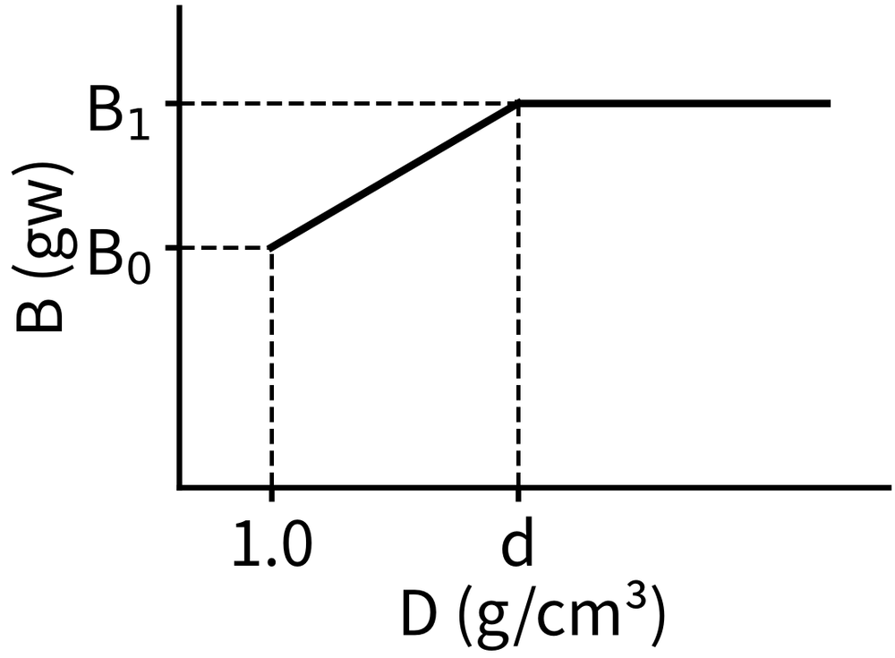
- (A) 雞蛋沒入糖水中的體積與糖水的密度成反比
- (B) 雞蛋所受的地球引力為零
- (C) 雞蛋所受的浮力大於雞蛋的重量
- (D) 隨著糖水密度增加，雞蛋所受的浮力漸增
看答案與詳解
答案：(A)
密度大於 d：雞蛋浮起，浮力＝雞蛋重量＝B1（定值）。
(A) ✔ 浮力固定，V沒×D＝B1 → V沒 與 D 成反比。
(B) ✘ 雞蛋仍受地球引力（重力）。
(C) ✘ 浮起靜止時浮力＝重量。
(D) ✘ 圖中浮力保持 B1 不變。
如圖所示，一正立方體木塊，密度為 0.6 g/cm3，置於裝有 500 mL 水的玻璃杯中，此時木塊靜止浮於水面，若在此玻璃杯中，再加入 500 mL 的油，發現液面上升，但木塊仍靜止浮於液面。已知油與水互不相溶，且油的密度為 0.8 g/cm3，則關於加入油前後的變化，下列敘述何者正確？
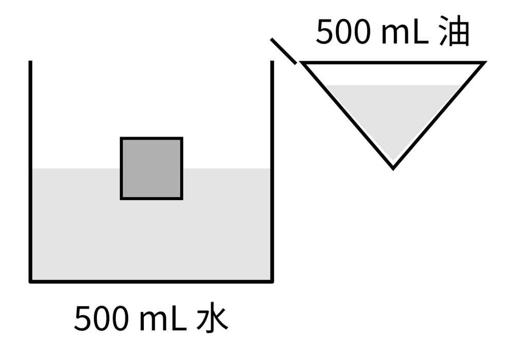
- (A) 木塊沒入液體中的體積變小
- (B) 木塊沒入液體中的體積變大
- (C) 木塊在液體中所受的浮力變小
- (D) 木塊在液體中所受的浮力變大
看答案與詳解
答案：(B)
加油前：浮力全由水提供，V沒＝W÷1.0。
加油後：原本露出水面的部分改泡在油中，油的密度 0.8 較小，同樣的浮力需要排開更多體積的液體 → 沒入液體（水＋油）的總體積變大 → (B) ✔、(A) ✘。
〔易錯〕浮力不變不代表沒入體積不變，要看液體密度。
會考／素養題
有一個以密度為 2.5 g/cm3 的材質製成之容器甲，將其置入另一盛水容器中，容器甲會浮在水面上，如題圖所示。若用手扶住容器甲，並在容器甲內倒滿水，釋放之，待靜止平衡後，容器甲的浮沉情形最可能為下列何者？
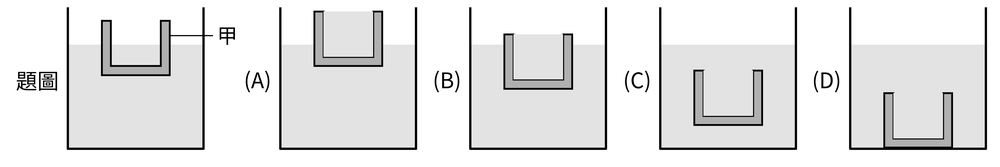
看答案與詳解
答案：(D)
倒滿水後，容器內的水與外面的水密度相同，容器內的水相當於「懸浮」；整體只剩容器材質本身，密度 2.5 g/cm3＞1 g/cm3 → 下沉到底部，選 (D)。
(A)(B) ✘ 浮在水面需整體平均密度小於水。(C) ✘ 懸浮需整體密度等於水。
一個均勻的正立方體木塊，其密度為 0.5 g/cm3，且任一面的面積皆為 A cm2，將此木塊置於密度為 1.0 g/cm3 的純水中，待平衡後，木塊底部距離水面的深度為 h cm，如圖所示。再於木塊上方正中央處放置一個質量為 300 g 的砝碼，平衡後木塊底部距離水面的深度變為（h＋3）cm，且木塊底面與水面仍保持平行，則此木塊任一面的面積 A cm2 應為多少？
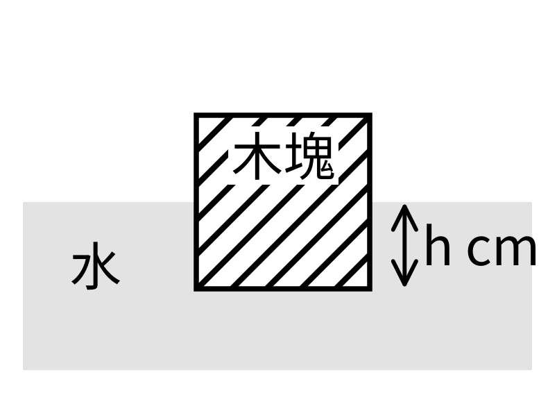
- (A) 100 cm2
- (B) 150 cm2
- (C) 200 cm2
- (D) 600 cm2
看答案與詳解
答案：(A)
增加的浮力＝多沒入的體積×水的密度＝(A×3)×1.0。
3A＝300 → A＝100 cm2，選 (A)。
驗算：邊長 10 cm，原本沒入 5 cm（密度 0.5），加砝碼後沒入 8 cm，仍未完全沒入，合理。
▲ 第 4-22～4-23 題為題組：水肺潛水是一項由潛水員攜帶氣瓶（內含壓縮空氣的鋼瓶）在海面下所進行的活動，潛水員會穿上一種可充氣或放氣的背心，藉由氣瓶對背心的充放氣來改變背心的體積大小，調整潛水員在海中的浮力大小，在背心內多充入一些空氣，潛水員可在不施力划水的情形下自然向海面浮起，從背心中多放出一些空氣，潛水員可在不施力划水的情形下自然向海底下沉。若背心的充氣量調整適當，潛水員可在不施力划水的情形下於海面下維持同樣的深度，此種調整背心的充氣量而能夠在海面下維持同樣深度的技術，稱為「中性浮力」。水肺潛水需要找同伴一起進行活動，可以互相照顧，每次潛水前也都要有適當的規劃，潛水後也要做紀錄。如圖為一位潛水員的潛水時間與潛水深度的紀錄。
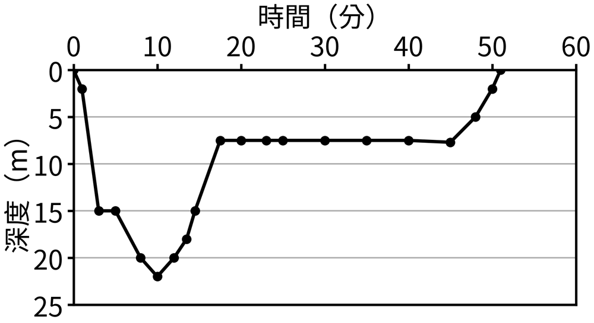
若未攜帶裝備潛水員的體積為 V人、質量為 M人、密度為 D人，潛水員所攜帶的所有裝備體積為 V裝、質量為 M裝，海水的密度為 D海，則下列哪一關係式的情況，可讓潛水員維持在海面下 10 m 的深度以「中性浮力」活動？
- (A) V人×D海＝M人
- (B) （V人＋V裝）×D人＝M人
- (C) （V人＋V裝）×D海＝M人＋M裝
- (D) V人×D海＋V裝×D人＝M人＋M裝
看答案與詳解
答案：(C)
浮力＝排開海水的重量＝(V人＋V裝)×D海；總重量＝M人＋M裝。
故 (V人＋V裝)×D海＝M人＋M裝，選 (C)。
(A) ✘ 漏了裝備。(B) ✘ 排開的是海水，應乘 D海。(D) ✘ 裝備排開的也是海水。
若不考慮海水的流動，依照上文中的潛水紀錄，此潛水員在開始潛水後多久，他所處位置的海水壓力最大？
- (A) 5 分鐘
- (B) 10 分鐘
- (C) 20 分鐘
- (D) 50 分鐘
看答案與詳解
答案：(B)
由紀錄圖：約第 10 分鐘時深度最深（約 22 m），選 (B)。
第 5 分鐘約 15 m，第 20 分鐘約 7.5 m，第 50 分鐘接近海面。
一個實驗裝置如圖所示，在兩個彈簧秤下方分別吊掛重物甲、乙，再將重物浸入純水中，待重物靜止後，兩個彈簧秤的讀數皆為 100 gw。已知甲、乙的質量分別為 200 g、300 g，若甲、乙的密度分別為 D甲、D乙，則 D甲：D乙 最接近下列何者？（兩彈簧秤均可測量至 500 gw）
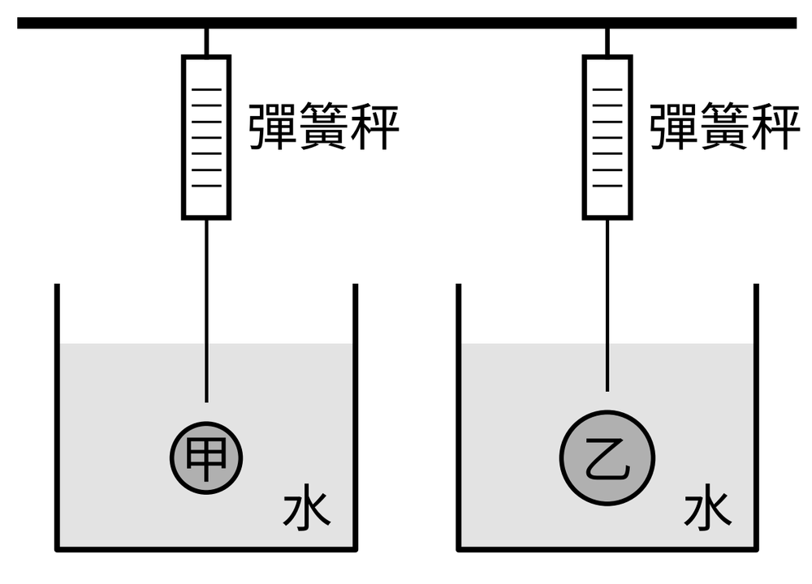
- (A) 1：1
- (B) 1：2
- (C) 2：3
- (D) 4：3
看答案與詳解
答案：(D)
甲：浮力＝200－100＝100 gw → V甲＝100 cm3 → D甲＝200÷100＝2 g/cm3。
乙：浮力＝300－100＝200 gw → V乙＝200 cm3 → D乙＝300÷200＝1.5 g/cm3。
D甲：D乙＝2：1.5＝4：3，選 (D)。
如圖所示，將甲、乙兩球以細線連接後放入水中，待平衡後，發現兩球未浮出水面也未觸及杯底。已知甲球的密度為 3 g/cm3，乙球的體積為甲球的 4 倍，若細繩的質量與體積忽略不計，則乙球的密度應為多少？
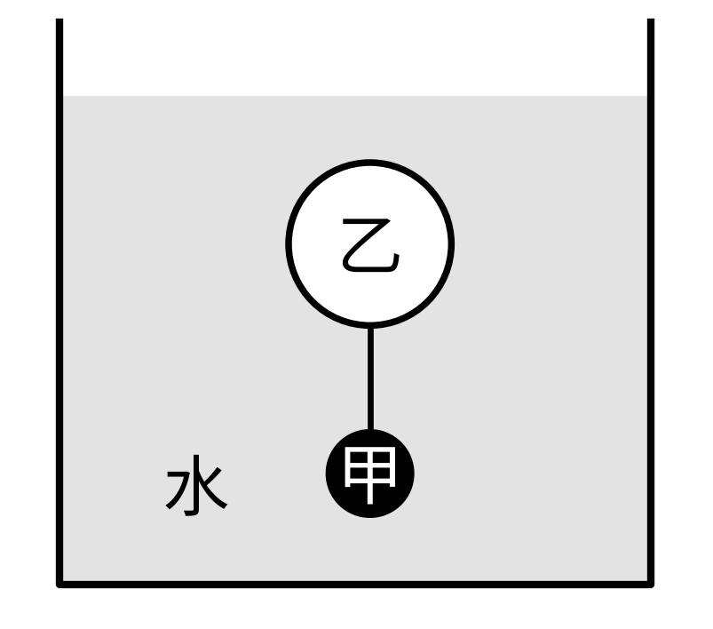
- (A) 0.5 g/cm3
- (B) 0.6 g/cm3
- (C) 0.8 g/cm3
- (D) 1.0 g/cm3
看答案與詳解
答案：(A)
設甲的體積為 V，乙為 4V：總質量＝3V＋4V×D乙，總體積＝5V。
(3V＋4V×D乙)÷5V＝1 → 3＋4D乙＝5 → D乙＝0.5 g/cm3，選 (A)。
另解：總浮力＝總重量 → 5V×1＝3V＋4V×D乙。
▲ 第 4-26～4-27 題為題組：下圖為甲、乙兩金屬彈簧懸掛不同重量的砝碼時，彈簧伸長量變化圖，已知兩彈簧的原始長度皆為 50 公分，且彈簧本身重量不計。
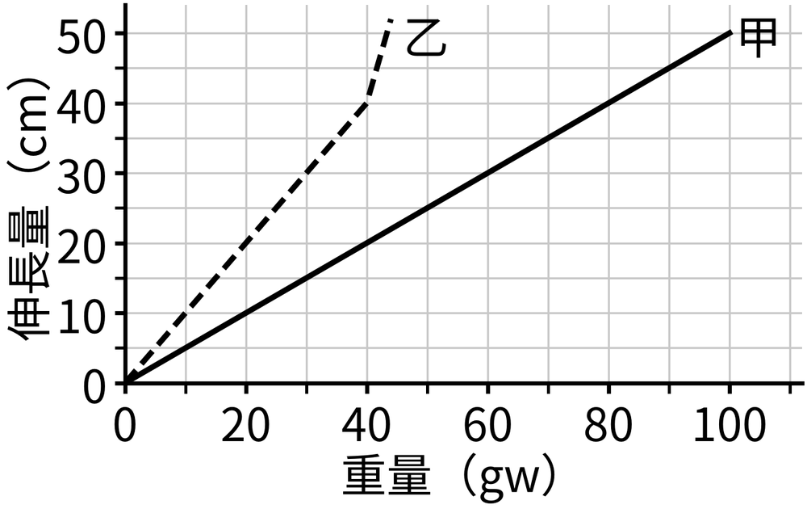
今以甲、乙其中一彈簧懸掛 X 物體，測量彈簧伸長量後再將 X 物體取下，重複 3 次皆測得彈簧伸長量為 48 公分，則此彈簧應為何者？X 物體的重量為何？
- (A) 甲，48 公克重
- (B) 乙，48 公克重
- (C) 甲，96 公克重
- (D) 乙，96 公克重
看答案與詳解
答案：(C)
所以重複 3 次都得到 48 公分的是在彈性限度內的甲彈簧。
甲：100 gw 伸長 50 公分 → 每 1 gw 伸長 0.5 公分 → X＝48÷0.5＝96 公克重，選 (C)。
已知 Y 物體的質量為 120 公克，若在月球上利用甲、乙兩彈簧分別測量 Y 的重量，且月球引力為地球的 1／6 倍，則下列相關敘述何者正確？
- (A) Y 物體的重量為 20 公克重，甲彈簧的總長度為 60 公分
- (B) Y 物體的重量為 120 公克重，甲彈簧的總長度為 110 公分
- (C) Y 物體的重量為 20 公克重，乙彈簧的總長度為 20 公分
- (D) Y 物體的重量為 120 公克重，乙彈簧的總長度為 170 公分
看答案與詳解
答案：(A)
甲：每 1 gw 伸長 0.5 公分 → 伸長 10 公分 → 總長＝50＋10＝60 公分 → (A) ✔。
乙：每 1 gw 伸長 1 公分 → 伸長 20 公分 → 總長＝50＋20＝70 公分；(C) 把伸長量當成總長度 ✘。